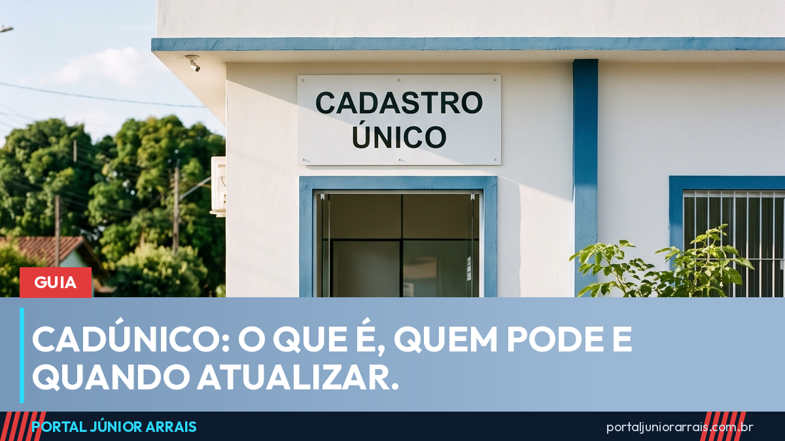

Concurso cultural · Grátis
Ver a pista de hoje
Caça ao Tesouro de Férias: junte as letras e concorra a até R$ 500 em vale-compras
De 31/10 a 08/11, todo dia ao meio-dia, uma letra nova escondida nas matérias do portal. Bateu a meta no Instagram, são 2 vencedores! Resultado na live do YouTube, dia 9/11 às 19h.
Novo · Calculadora
Calcular agora
Quanto sua família vai receber do Bolsa Família a partir de outubro?
Informe quem mora na sua casa e veja o valor de hoje e o valor com o reajuste de 15,04%.
Despejo: quando o inquilino pode ser despejado, os prazos para sair e como evitar
Cartão clonado e compra que você não fez: o banco responde pela fraude; veja como contestar
Como pagar o INSS sem perder o Bolsa Família em 2026: veja o passo a passo
Inscreva-se no canal →
Contrato de experiência: limite de 90 dias, uma prorrogação e o que recebe quem sai antes
Acompanhante no hospital: quem tem direito no SUS e no plano de saúde
Cancelar internet, TV e telefone: as regras da Anatel, o prazo e a multa de fidelidade
Aposentadoria da pessoa com deficiência: quanto tempo cada grau exige e como é o cálculo
Testamento: quem pode fazer, os três tipos e a metade que fica para os herdeiros
Ligações de telemarketing: como bloquear no Não Me Perturbe e onde reclamar


Guias do portal
Ver todos os guias →
Bolsa Família
Bolsa Família: quem tem direito, quanto recebe, regra de proteção e o que bloqueia o benefício
BPC/LOAS
BPC/LOAS: quem tem direito, o limite de renda, a avaliação do INSS e o que faz o benefício parar

Benefícios
CadÚnico: o que é, quem pode se inscrever, quando atualizar e quais benefícios dependem dele
Pé-de-Meia
Pé-de-Meia: quem tem direito, quanto o estudante recebe, o que trava a conta e o calendário
Últimas notícias
Trabalho
Intervalo de almoço: mínimo de 1 hora e o que a empresa paga se cortar a pausa
Justiça
Divórcio no cartório: quando dá para fazer sem processo e o que muda com filhos menores
Economia
Tarifa bancária: os serviços que o banco não pode cobrar e como sair do pacote
Trabalho
Adicional noturno: 20% a mais, hora de 52 minutos e o que vale depois das 5h
Bolsa Família
Bolsa Família de novembro: pagamento começa dia 16 e deve sair em três dias
Bolsa Família